FIELD SCENARIO
The wedding weekend backup
A family noticed slow drains, then hosted extra guests. A tank already near capacity became an urgent call rather than a routine visit.
Your septic tank has one job: quietly manage waste until the next scheduled service. Ignore sludge levels long enough and it may start sending reminders through your bathroom floor. We pump, inspect and document the job, then help you plan the next visit.
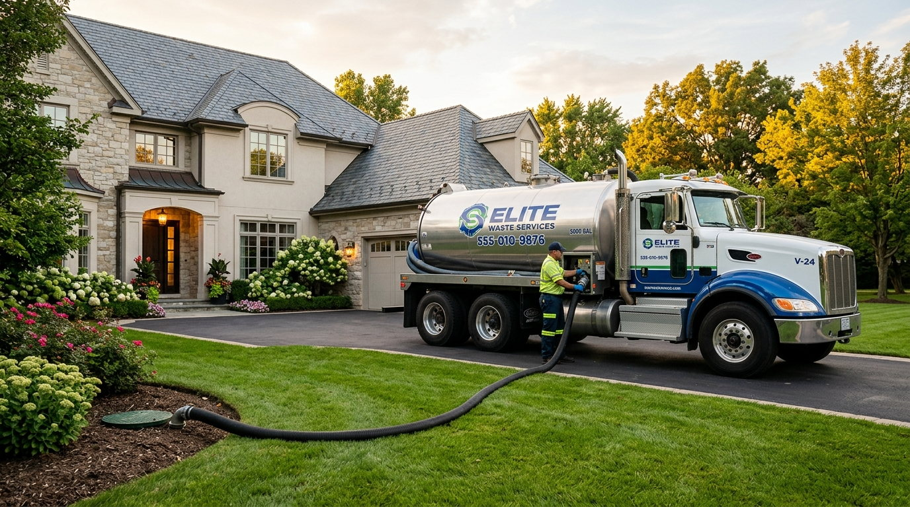
A septic system is not a bottomless hole. Select each marker to see what it does and what changes when sludge is allowed to build up.
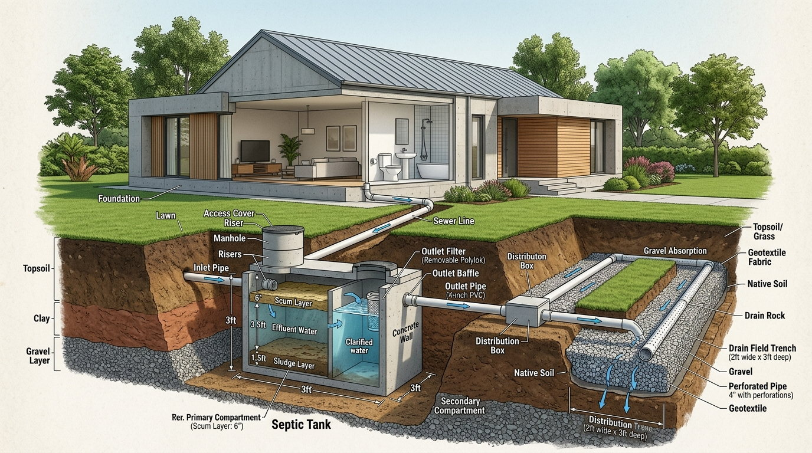
A sealed chamber where heavy sludge settles, grease floats, and liquid flows onward to soil treatment. Solids eventually require mechanized removal.
These illustrative INR ranges vary widely with tank size, site access and repair scope. The real cost of delay includes damaged floors, contaminated yards and downtime.
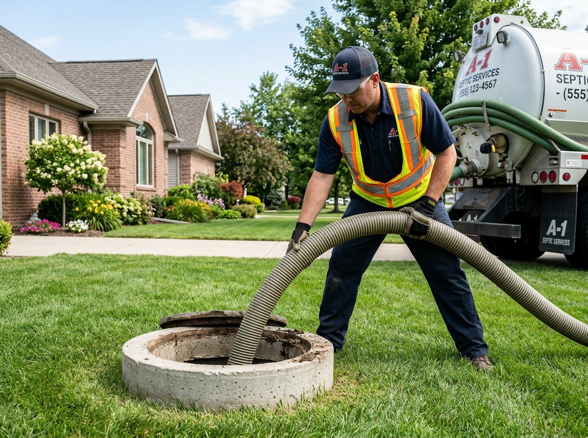
INR 3,500 - 9,000
Schedule a pump before solids travel downstream. Record the visit, check accessible baffles and keep the next date on your calendar.
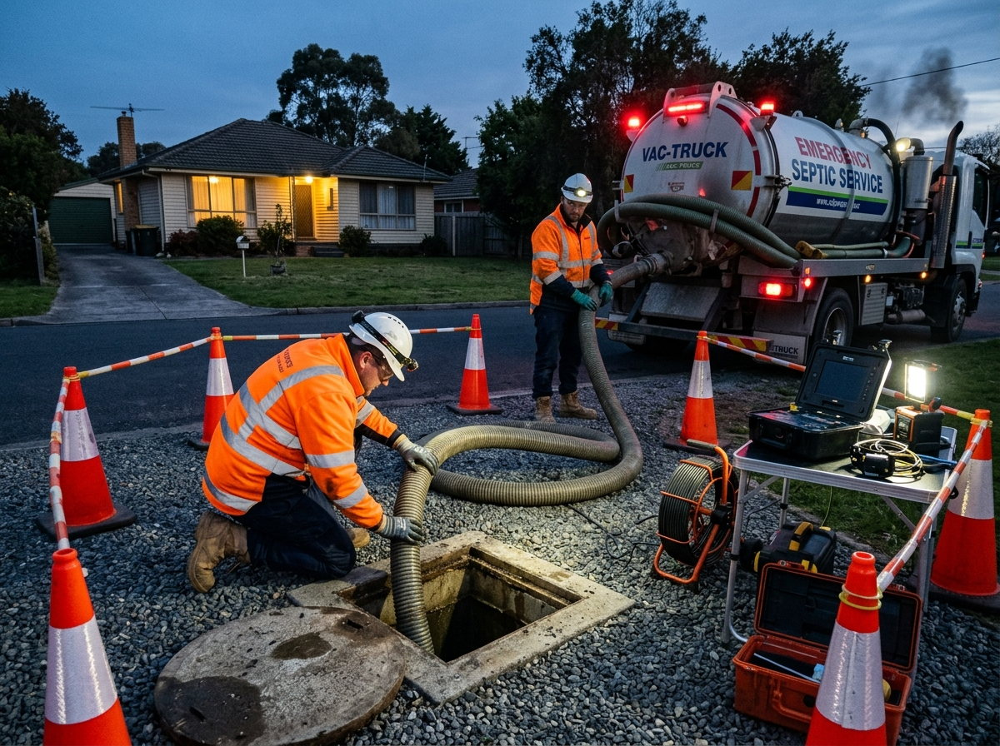
INR 15,000 - 2,00,000+
Backups, field repairs or property cleanup can cost far more and create health risks. Not every wet yard needs replacement, but ignoring symptoms narrows your options.
A family noticed slow drains, then hosted extra guests. A tank already near capacity became an urgent call rather than a routine visit.
One section of lawn stayed lush in dry weather. An assessment found signs of uneven effluent distribution that needed further checking.
Use tank capacity, people at home and heavier water use to estimate your next planning date. This is guidance, not a diagnosis.
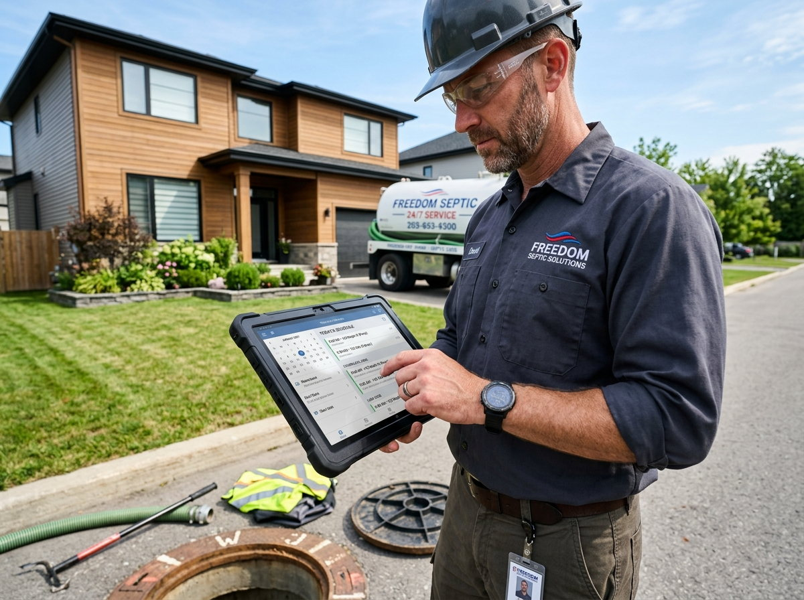
One sign does not prove a full tank. But several symptoms together are your cue to stop guessing and request an inspection.
A restriction or vent problem may be developing. Check whether more than one fixture is affected.
A weak flush across several rooms deserves a professional assessment, not more drain cleaner.
Persistent odor near the tank, drain field or house can indicate leakage or a venting issue.
An unusually wet or lush patch over the drain field may signal effluent is surfacing.
Keep people and pets away from suspected wastewater. Arrange urgent professional help.
Stop running water-heavy fixtures and call immediately. Protect occupants from exposure.
Never enter an open tank or lean into its opening. Hydrogen sulfide and other gases can be deadly even if the site seems quiet. Keep the area clear and call trained operators with mechanized equipment.
Request an inspectionWe start with the issue and access conditions. The goal is to identify what is necessary and explain the limits of the visit.
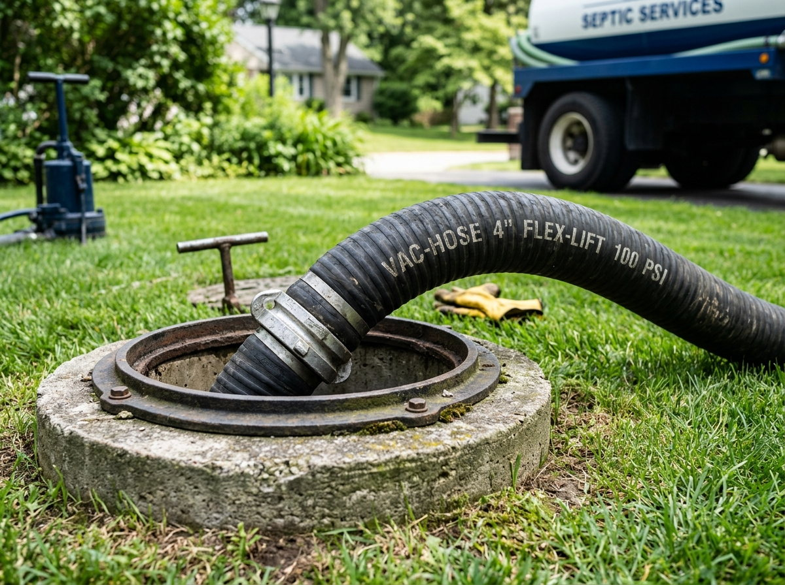
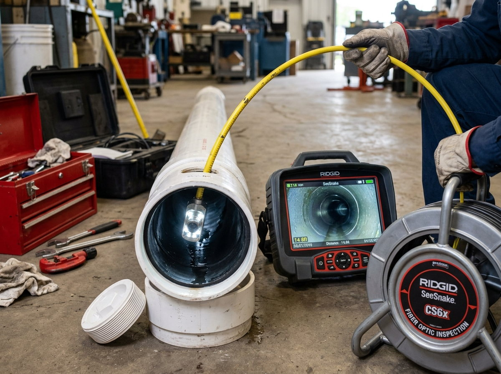
A camera survey checks accessible pipes for roots, cracks and blockages without digging first.
Explore service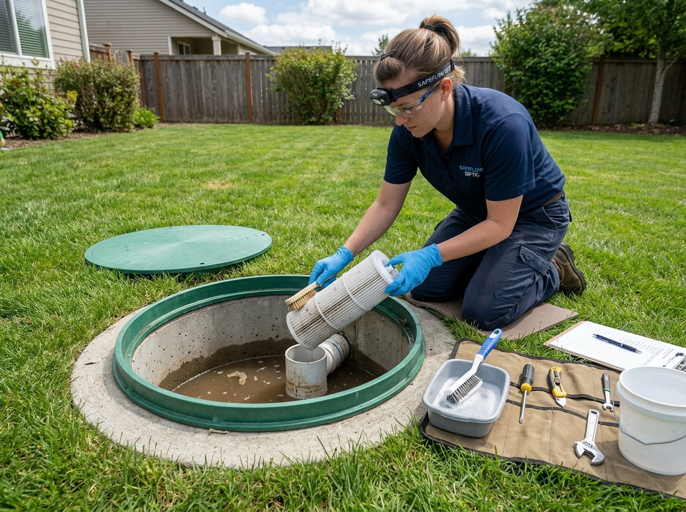
Scheduled reviews reduce surprises and help keep a written service history.
Explore service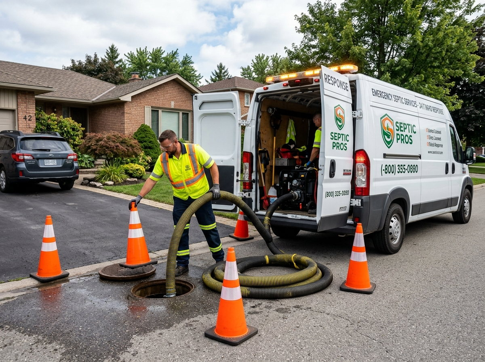
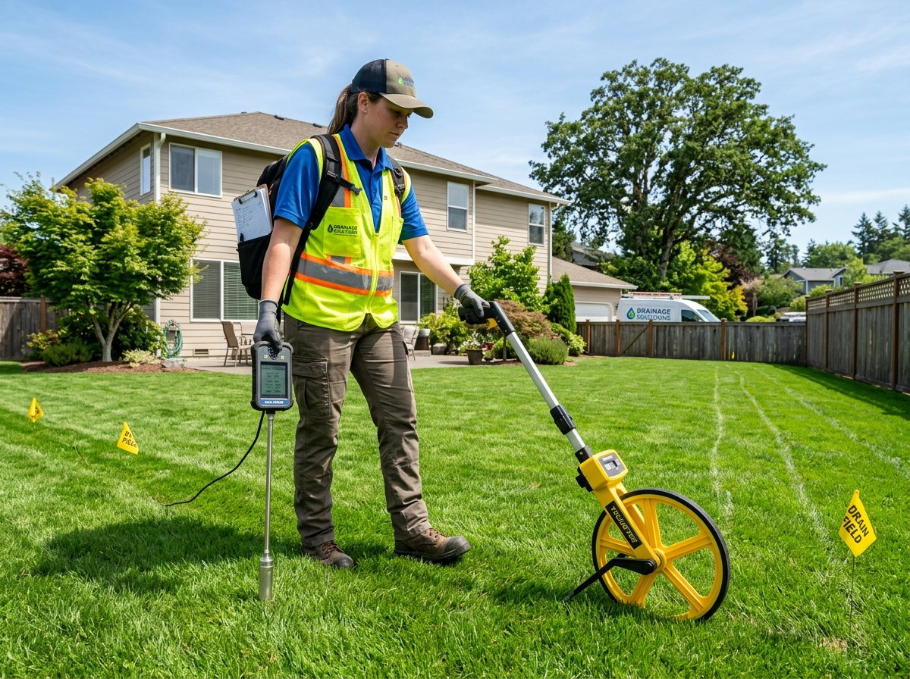
A suspiciously lush green strip, persistent sogginess or odors can point to an overloaded drain field.
Explore service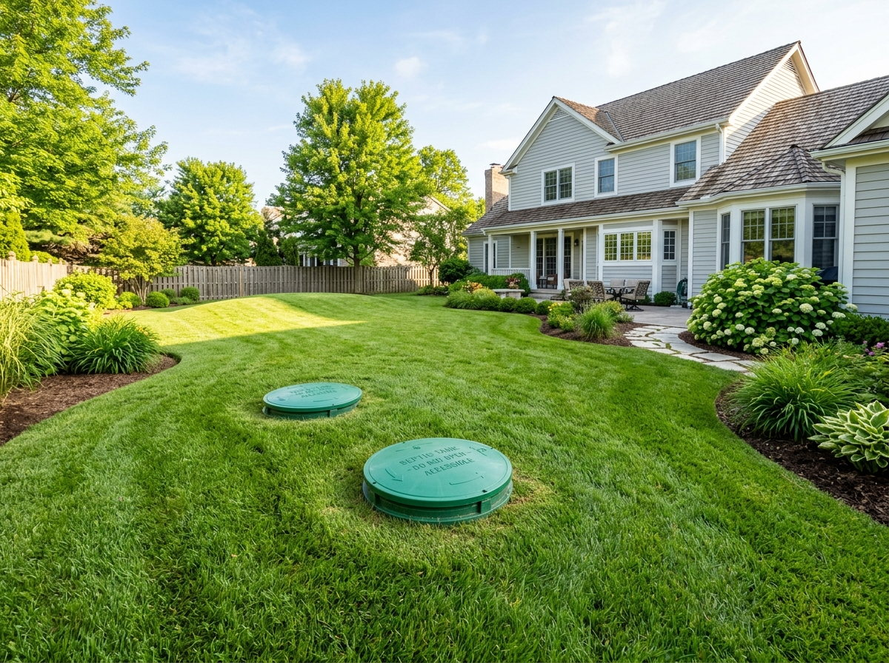
Start with the tank volume, household load and a real service log.
Explore serviceA trained operator should leave you with a clean, documented site, not a mystery about what happened.
Share tank size, location and symptoms so equipment and timing can be planned.
Clear access, secure the area and inspect the accessible riser.
Assess sludge, scum and the condition of visible baffles.
Use vacuum extraction and appropriate transport to an authorized disposal route.
Explain observations, document the work and suggest a next review date.
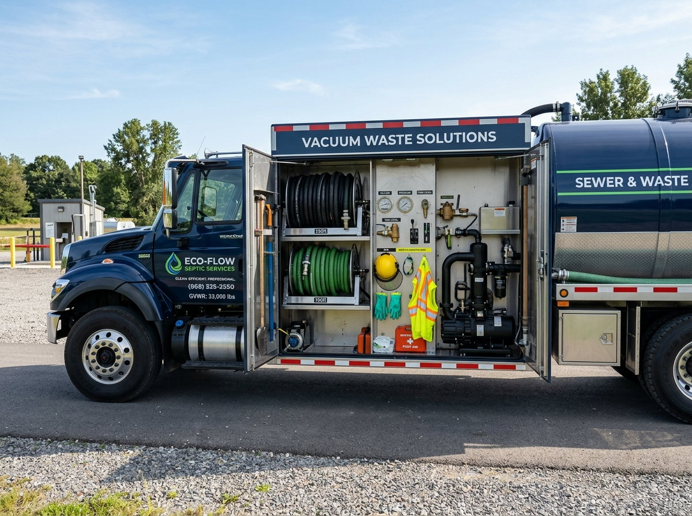
Tap or click the cards to turn a common myth into the useful fact.
Click to reveal what actually matters.
Biological activity does not remove accumulating sludge. Pumping is still needed.
Click to reveal what actually matters.
A tank can be overloaded long before the first visible backup.
Click to reveal what actually matters.
New tanks can also overload if usage is heavy or inappropriate material is flushed.
Illustrative website content: verify before use
Illustrative website content: verify before use
Illustrative website content: verify before use
Illustrative website content: verify before use
These are fictional sample scenarios for layout demonstration, not verified customer reviews.
"RS Puram"
We noticed gurgling a week before guests arrived. The crew checked
access first and explained why a camera pass was necessary before making promises.
"Peelamedu"
Our riser was hidden under paving. The operator asked for the old
service sketch and avoided digging where it was not needed.
"Ganapathy"
The reminder and visit log were more useful than we expected. We
finally know when to check the tank again.
"Sulur"
We had a wet strip in the garden. The technician explained the signs and
what further tests could confirm rather than selling a full replacement.
"Saravanampatti"
Before signing for the property, we got a clearer list of
questions about tank access and service history.
"Singanallur"
The line inspection helped us stop guessing about a recurring slow
drain and plan the appropriate next step.
Routine reminders, capacity checks and a clear service history make home ownership easier. TankWise can organize a manual call or SMS/WhatsApp reminder schedule; no dashboard or subscription portal is required.
Here are the questions we would want answered before paying for septic work.
Many households fall in a 2-5 year range, but capacity, household size and water use can change the interval significantly. Use the calculator as a starting point and confirm after a site assessment.
No. Additives do not remove the settled solids that accumulate over time. Depending on the product, they may even disturb the system and complicate maintenance.
It may indicate a restriction or venting issue, not necessarily a full tank. If several fixtures are slow at once, arrange a professional inspection instead of pouring chemicals down the drain.
Standing wastewater creates exposure risks. Keep people and pets away, reduce water use and contact a professional promptly for assessment.
An accessible residential tank often takes about 2-4 hours including setup and site checks. Difficult access, tank size and unexpected repairs can extend the visit.
No. Septic tanks are confined spaces with lethal gas hazards. TankWise specifies mechanized operations and prohibits manual entry; only authorized trained teams should handle the work.
Clear the driveway and tank access area, secure pets and identify any underground utilities or garden structures. Avoid covering the riser immediately before the visit.
Do not flush wipes, oils, sanitary products, diapers, paint, solvents or medicines. Even so-called flushable wipes are a common cause of blockages.
Choose "Not sure" in the booking form. Share building details and any maintenance records so the crew can estimate the correct approach onsite.
The site includes an emergency contact option, while actual crew availability must be confirmed by the operator. Routine visits are scheduled in normal working hours.
Real experiences from residential villa owners, apartment RWAs, and facility managers who rely on TankWise.
"TankWise arrived within 45 minutes of our emergency call in RS Puram. The crew was courteous, worked with clean vacuum hoses without damaging our garden lawn, and didn't enter the tank. Transparent pricing with zero hidden charges."
"The CCTV camera survey diagnosed tree roots in our main line that two previous plumbers failed to spot. Their written report gave us exact depth markers, saving us from tearing up our entire tiled driveway."
"We enrolled our apartment community into their Routine Maintenance Plan. Scheduled sludge checks and timely reminders have completely eliminated unexpected monsoon backups. Truly professional infrastructure care."
Arrange a mechanized pumping or inspection visit before a minor issue turns into a very expensive weekend.